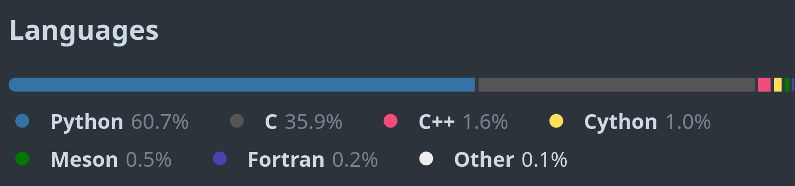
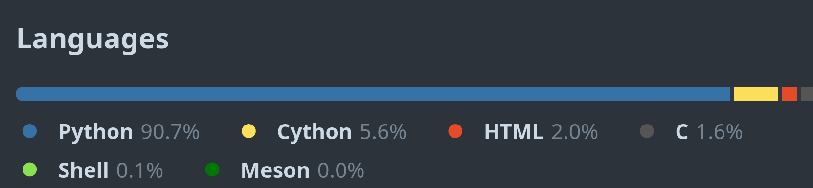
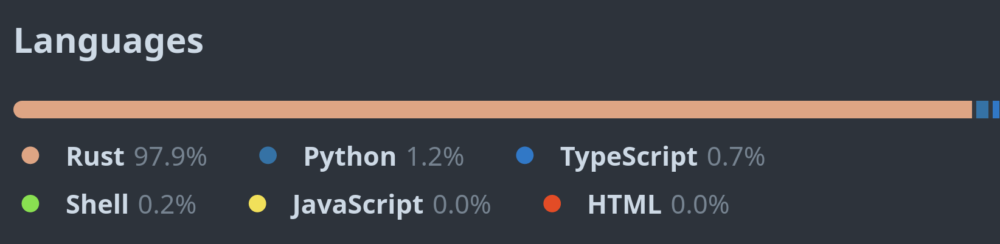
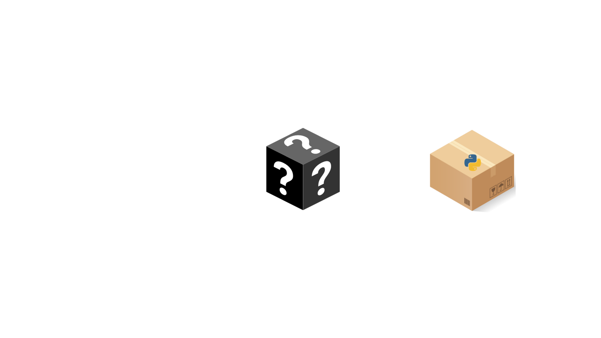

The role of Rust, Zig and C++ in the Python ecosystem
Dr. Cristián Maureira-Fredes
@cmaureir


Slides at
maureira.xyz/pyconlt2024
How many languages
do you know?
Python is a simple language
Creating lists
s=['a','b','c','d','e']
s=list('abcde')
*s,='abcde'
Checking if a number is a power of 2
$$ \log_{x}\ Y^Z = Z\ \log_{x} Y $$
from math import log2, ceil, floor
ceil(log2(n)) == floor(log2(n))
2**n%n==0
2**n%n<1
n&~-n<1
Accesing a Lookup table
# 0: False
# 1: True
# 2: True
# 3: False
# 4: True
{0: False, 1: True, 2: True, 3: False, 4: True}
# or
(False, True, True, False, True)
0b10110
int("0b10110", 2) # 22
22>>i&1
Languages can be easy
and difficult
Are we using others?
NumPy
Pandas
Scikit-Learn

Tensorflow

PyTorch

Ruff
Why use
other languages?
1. Getting in touch with
new technologies
2. Being able to understand
old and new software
3. Reach a new
stack or platform
4. "Because Python is slow"
- Probably someone you know.
So...how many languages are out there?
ü§î
No need to learn
them all
First: Let's understand Python
Standard implementation
CPython
⭐ Interested?
The repo: github.com/python/cpythonOther talks: maureira.xyz/pages/talks.html
Extending CPython
with other languages
Your first C-extension (1/2)
Building blocks üß±
- Functions with Python's C-API
- Module's methods definition
- Module's definition
- Module's creation/initialization
Your first C-extension (2/2)
#include <Python.h>
static char simple_docs[] = "hello(): prints hello :P\n";
static PyObject* simple_hello(PyObject* self, PyObject* args){
char *msg = "Hola PyCon LT";
return Py_BuildValue("s", msg);
}
static PyMethodDef simple_funcs[] = {
{"hello", // ml_name
(PyCFunction)simple_hello, // ml_meth
METH_NOARGS, // ml_flags
simple_docs}, // ml_doc
{NULL, NULL, NULL, NULL}
};
static struct PyModuleDef simplemodule = {
PyModuleDef_HEAD_INIT, // m_base
"simple", // m_name
NULL, // m_doc
-1, // m_size
simple_funcs // m_methods
};
PyMODINIT_FUNC PyInit_simple(void){
return PyModule_Create(&simplemodule);
}
# setup.py
from setuptools import setup, Extension
setup(
name='simple',
version='1.0',
ext_modules=[Extension('simple',
['simple.c'])]
)
# Create wheel
$ python -m build -w
>>> import simple
>>> simple.hello()
'Hola PyCon LT'
Don't be scared üò±
of the syntax
Let's check other three
programming languages
C++
- Extension of C
- OOP, Generics, Funtional
- Low level memory handling
- Performance, eficiency and flexibility
- cppreference.com
#include <iostream>
using namespace std;
int main(int argc, char *argv[]) {
cout << "Hello, world!" << endl;
return 0;
}
$ g++ main.cpp -o main
$ ./main
Hello, world!
C++23
- Extension of C
- OOP, Generics, Funtional
- Low level memory handling
- Performance, eficiency and flexibility
- cppreference.com
import std;
int main(int argc, char *argv[]) {
std::print("Hello, world!");
return 0;
}
$ g++ main.cpp -o main
$ ./main
Hello, world!
Python and C++
class Rectangle:
def __init__(self, width: int, height: int):
self.width : int = width;
self.height : int = height;
def set_values(self, x: int, y: int):
self.width = x;
self.height = y;
def area(self) -> int:
return self.width * self.height
def main():
rect = Rectangle()
rect.set_values(3,4);
print(f"area: {rect.area()}")
#include <iostream>
using namespace std;
class Rectangle {
int width, height;
public:
void set_values (int,int);
int area() {return width*height;}
};
void Rectangle::set_values(int x, int y) {
width = x;
height = y;
}
int main () {
Rectangle rect;
rect.set_values(3,4);
cout << "area: " << rect.area();
return 0;
}
C++ - Summary
- Widely used language (*)
- No "pip" equivalent
- Recent similar syntax with Python
- Some features can be complex
Delivering Safe C++ - Bjarne Stroustrup - CppCon 2023
Rust
- Performance
- Fast and memory efficient (no runtime or GC).
- Reliability
- Rich type system and ownership model (memory- and thread-safety)
- Productivity
- Docs, friendly compiler, package manager, and build tools
fn main() {
println!("Hello, world!");
}
$ rustc main.rs
$ ./main
Hello, world!
Python and Rust (1/2)
def main():
nums: List[int] = [1, 2, 3, 4, 5, 6]
five: int = nums[1] + nums[2];
print(f""Result: {five}")
fn main() {
let arr: [i32; 5] = [1, 2, 3, 4, 5];
let five = arr[1] + arr[2];
println!("Result: {}", five);
}
Python and Rust (2/2)
class Person:
def __init__(self, name: str, age: int):
self.name: str = name
self.age: int = age
def speak(self) -> None:
print(f"{self.name} says Hello!")
def main():
maria = Person(
name="Maria",
age=22
)
maria.speak()
// declare a struct
struct Person {
name: String,
age: i32
}
impl Person {
fn speak(&self){
println!("{} says Hello!", self.name);
}
}
fn main() {
let maria = Person{
name: String::from("Maria"),
age: 5
};
maria.speak();
}
Rust - Summary
- Memory management (Ownership & Borrowing)
- Tooling (
cargo) - Growing ecosystem
- Still evolving
Rust for Python Developers - Swiss Python Summit 2022
Zig
- No flow control, nor hidden mem alloc
- No preprocessor, and no macros
- Metaprogramming: compile-time code exec and lazy evaluation (
comptime) - Tests!
// main.zig
const std = @import("std");
pub fn main() !void {
const stdout = std.io.getStdOut().writer();
try stdout.print("Hello, {s}!\n", .{"world"});
}
$ zig build-exe main.zig
$ ./hello
Hello, world!
Python and Zig
class Rectangle:
def __init__(self, x, y):
self.x = x
self.y = y
def area(self):
return self.x * self.y
def main():
r = Rectangle(2.2, 3.3);
print(f"Rectangle area: {r.area()}")
const std = @import("std");
const Rectangle = struct {
x: f32,
y: f32,
pub fn init(x: f32, y: f32) Rectangle {
return Rectangle{.x = x, .y = y};
}
pub fn area(self: Rectangle) f32 {
return self.x * self.y;
}
};
pub fn main() !void {
const r = Rectangle.init(2.2, 3.3);
const stdout = std.io.getStdOut().writer();
try stdout.print("Rectangle area: {}\n",
.{r.area()});
}
Zig - Summary
- Faster and more secure than C
- Integration with C libraries without FFI/bindings
- Built-in testing framework
comptime- Cross compilation out of the box (*)
(*) Feature might be removed Issue #16270
Intro to the Zig Programming Language • Andrew Kelley • GOTO 2022
How can we use them
with Python?
Our previous C example
#include <Python.h>
static char simple_docs[] = "hello(): prints hello :P\n";
static PyObject* simple_hello(PyObject* self, PyObject* args){
char *msg = "Hola PyCon LT!";
return Py_BuildValue("s", msg);
}
static PyMethodDef simple_funcs[] = {
{"hello", // ml_name
(PyCFunction)simple_hello, // ml_meth
METH_NOARGS, // ml_flags
simple_docs}, // ml_doc
{NULL, NULL, NULL, NULL}
};
static struct PyModuleDef simplemodule = {
PyModuleDef_HEAD_INIT, // m_base
"simple", // m_name
NULL, // m_doc
-1, // m_size
simple_funcs // m_methods
};
PyMODINIT_FUNC PyInit_simple(void){
return PyModule_Create(&simplemodule);
}
# setup.py
from setuptools import setup, Extension
setup(
name='simple',
version='1.0',
ext_modules=[Extension('simple',
['simple.c'])]
)
# Create wheel
$ python -m build -w
With C++ it's almost the same
#include <Python.h>
#include <string>
static char simple_docs[] = "hello(): prints hello :P\n";
static PyObject* simple_hello(PyObject* self, PyObject* args){
std::string msg = "Hola PyCon LT!";
return Py_BuildValue("s", msg.c_str());
}
static PyMethodDef simple_funcs[] = {
{"hello", // ml_name
(PyCFunction)simple_hello, // ml_meth
METH_NOARGS, // ml_flags
simple_docs}, // ml_doc
{NULL, NULL, NULL, NULL}
};
static struct PyModuleDef simplemodule = {
PyModuleDef_HEAD_INIT, // m_base
"simple", // m_name
NULL, // m_doc
-1, // m_size
simple_funcs // m_methods
};
PyMODINIT_FUNC PyInit_simple(void){
return PyModule_Create(&simplemodule);
}
# setup.py
from setuptools import setup, Extension
setup(
name='simple',
version='1.0',
ext_modules=[Extension('simple',
['simple.cpp'])]
)
# Create wheel
$ python -m build -w
or a Zig extension (1/2)
const py = @cImport({
@cInclude("Python.h");
});
const PyObject = py.PyObject;
const PyMethodDef = py.PyMethodDef;
const PyModuleDef = py.PyModuleDef;
const PyModuleDef_Base = py.PyModuleDef_Base;
const Py_BuildValue = py.Py_BuildValue;
const PyModule_Create = py.PyModule_Create;
const METH_NOARGS = py.METH_NOARGS;
fn hello(self: [*c]PyObject,
args: [*c]PyObject) callconv(.C) [*]PyObject {
_ = self;
_ = args;
return Py_BuildValue("s", "Hello from Zig :D");
}
var Methods = [_]PyMethodDef{
PyMethodDef{
.ml_name = "hello",
.ml_meth = hello,
.ml_flags = METH_NOARGS,
.ml_doc = null,
},
PyMethodDef{
.ml_name = null,
.ml_meth = null,
.ml_flags = 0,
.ml_doc = null,
},
};
var module = PyModuleDef{
.m_base = PyModuleDef_Base{
.ob_base = PyObject{
.ob_refcnt = 1,
.ob_type = null,
},
.m_init = null,
.m_index = 0,
.m_copy = null,
},
.m_name = "hellozig",
.m_doc = null,
.m_size = -1,
.m_methods = &Methods,
.m_slots = null,
.m_traverse = null,
.m_clear = null,
.m_free = null,
};
pub export fn PyInit_hellozig() [*]PyObject {
return PyModule_Create(&module);
}
or a Zig extension (2/2)
# setup.py (1/2)
import os
from setuptools import setup, Extension
from setuptools.command.build_ext import build_ext
class ZigBuilder(build_ext):
def build_extension(self, ext):
assert len(ext.sources) == 1
if not os.path.exists(self.build_lib):
os.makedirs(self.build_lib)
self.spawn(
[
"zig",
"build-lib",
"-O",
"ReleaseFast",
"-lc",
f"-femit-bin={self.get_ext_fullpath(ext.name)}",
"-fallow-shlib-undefined",
"-dynamic",
*[f"-I{d}" for d in self.include_dirs],
ext.sources[0],
]
)
# setup.py (2/2)
setup(
name="hellozig",
version="0.0.1",
description="a experiment create Python module in Zig",
ext_modules=[
Extension("hellozig", sources=["hellomodule.zig"])
],
cmdclass={"build_ext": ZigBuilder},
)
# Create wheel
$ python -m build -w
Do we need to write all that by hand?
üò±
Binding generators
pybind11 (C++)
#include <pybind11/pybind11.h>
int add(int i, int j) {
return i + j;
}
PYBIND11_MODULE(example, m) {
// optional module docstring
m.doc() = "pybind11 example plugin";
m.def("add", &add,
"A function that adds two numbers");
}
$ c++ -O3 -Wall -shared -std=c++11 \
-fPIC $(python3 -m pybind11 --includes) example.cpp \
-o example$(python3-config --extension-suffix)
Shiboken (C++)

doc.qt.io/qtforpython-6/shiboken6
// test.cpp
#include <test.hpp>
int add(int i, int j) {
return i + j;
}
// test.hpp
int add(int i, int j);
<!-- bindings.xml -->
<?xml version="1.0"?>
<typesystem package="simple">
<function signature="add(int, int)"/>
</typesystem>
$ cmake -S . -B build
$ cmake --build build
$ cmake --install build
PyO3 (Rust)
use pyo3::prelude::*;
/// The sum of two numbers.
#[pyfunction]
fn add(a: i32, b: i32) -> PyResult {
Ok(a + b)
}
/// A Python module implemented in Rust.
#[pymodule]
fn simple_rust(_py: Python, m: &PyModule) -> PyResult<()> {
m.add_function(wrap_pyfunction!(add, m)?)?;
Ok(())
}
$ maturin develop
Ziggy PyDust (Zig)
const py = @import("pydust");
pub fn add(args: struct { a: i32, b: i32 }) i32 {
return args.a + args.b;
}
comptime {
py.rootmodule(@This());
}
$ poetry install
What's the catch? üò±
- Language details
- Data types and Pointers
- Memory management (ownership)
- Global Interpreter Lock (GIL)
- and many other topics!
Real application
rustglob
use pyo3::{prelude::*, types::PyList};
use std::fs;
use walkdir::WalkDir;
#[pyfunction]
fn glob(py: Python<'_>, path: String, recursive: Option) -> PyResult<&PyList> {
let list: &PyList = PyList::empty(py);
if recursive.unwrap_or(false) == false {
for path in fs::read_dir(path).unwrap() {
let _ = list.append(path.unwrap().path().display().to_string());
}
} else {
for path in WalkDir::new(path) {
let _ = list.append(path.unwrap().path().display().to_string());
}
};
Ok(list)
}
#[pymodule]
fn rust_glob(_py: Python, m: &PyModule) -> PyResult<()> {
m.add_function(wrap_pyfunction!(glob, m)?)?;
Ok(())
}
Setup & benchmark
1K directories, 1M files
| Non-recursive (s) | Recursive (s) | Improvement | |
glob |
0.00204 | 6.46604 | - |
Path.glob |
0.43959 | 4.64072 | 28% |
Rust glob |
0.00086 | 0.96463 | 85%üéâ |
C++ glob |
0.00056 | 0.56199 | 91% ü§î |
static PyObject* fastglob_glob(PyObject* self, PyObject* args, PyObject* kwds){
// Parsing the arguments of the function call
const char *kwlist[] = {"directory", "recursive",0};
const char *directory = nullptr;
const int *recursive = nullptr;
if (!PyArg_ParseTupleAndKeywords(args, kwds, "z|p", const_cast(kwlist),
&directory, &recursive))
return nullptr;
// Creating empty list
PyObject *l = PyList_New(0);
// Filling the list depending if it's recursive or not
if (recursive) {
for (const auto &entry : fs::recursive_directory_iterator(directory))
PyList_Append(l, PyUnicode_FromString(entry.path().c_str()));
} else {
for (const auto &entry : fs::directory_iterator(directory))
PyList_Append(l, PyUnicode_FromString(entry.path().c_str()));
}
return l;
}
Today's relevance ⚠️
Compiled vs Interpreted
Compiled ones, are faster

astral.sh/blog/uv/

rye-up.com/
Should we re-write
everything in Rust?
Should enable more people
to be knowledgable about it?
but...
So is extending Python
the only potential?
PEP684
A Per-Interpreter GIL
peps.python.org/pep-0684/ (3.12)
PEP703
Making the Global Interpreter Lock Optional in CPython
peps.python.org/pep-0703/ (3.13*)
The Faster CPython initiative
üëâ Initial plan
üëâ Current ideas
JIT Compiler
Experimental
docs.python.org/3.13/whatsnew/3.13.html#whatsnew313-jit-compiler
Extending Python with other languages
generates discussion
Extending Python with other languages
keeps the community active
Extending Python with other languages
includes other communities
The role of Rust, Zig and C++ in the Python ecosystem
Dr. Cristián Maureira-Fredes
@cmaureir